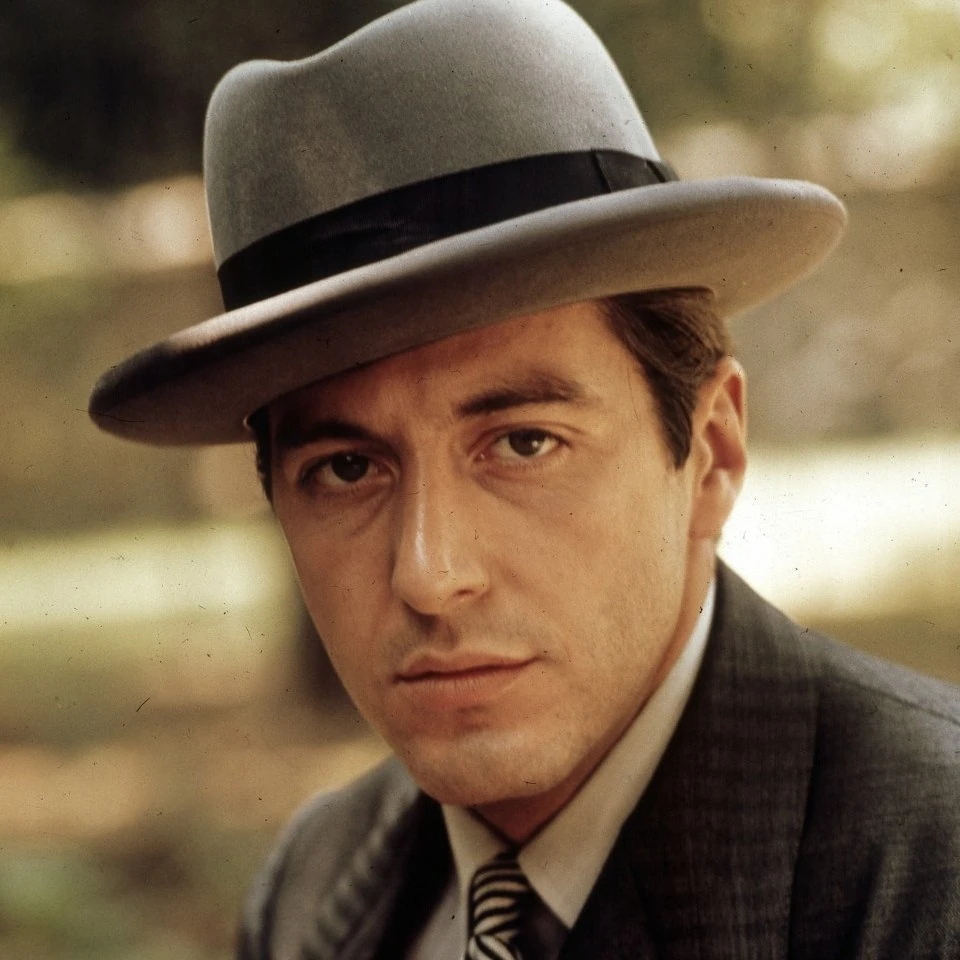

Michael Corleone is a fictional character and the protagonist of Mario Puzo's 1969 novel The Godfather.
In the three Godfather films, directed by Francis Ford Coppola, Michael was portrayed by Al Pacino,
for which he was twice-nominated for Academy Awards. Michael is the youngest son of Vito Corleone,
a Sicilian immigrant who builds a Mafia empire. Upon his father's death,
Michael succeeds him as the don of the Corleone crime family.